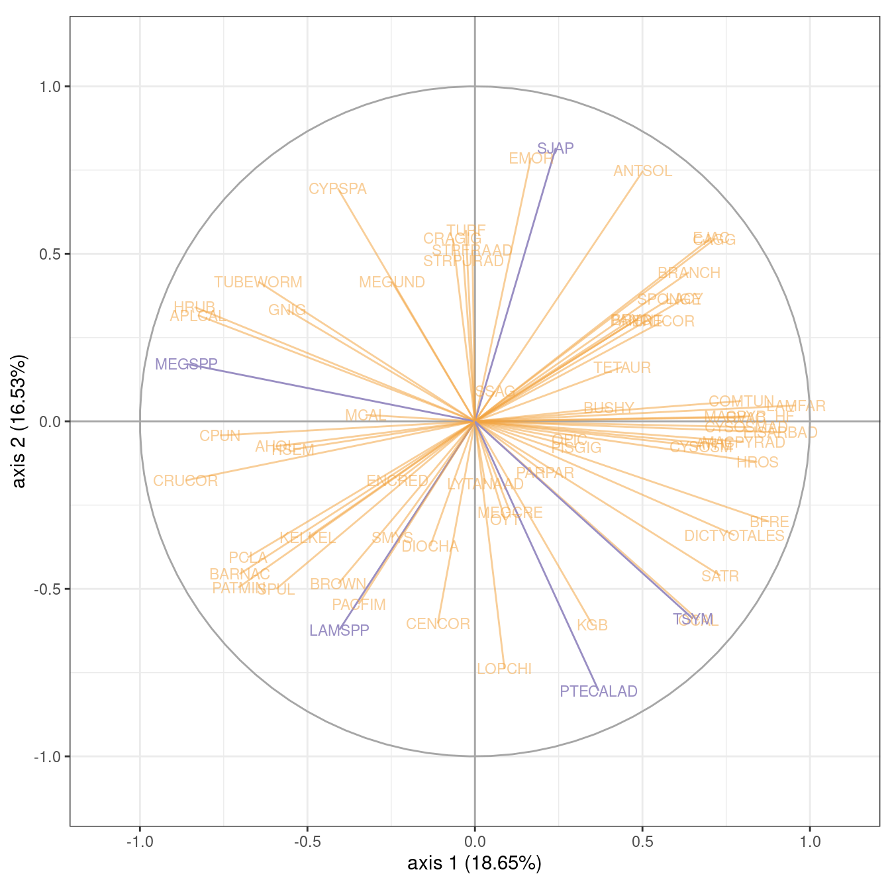
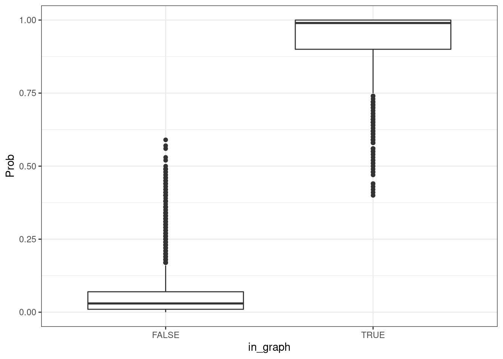

Le modèle Poisson log-normal: un cadre générique pour l’analyse des distributions joint d’abondance
J. Chiquet, M.-J. Cros , M. Mariadassou, N. Peyrard, S. Robin
Ce document constitue une présentation des codes et analyses effectuées dans le chapitre Le modèle Poisson log-normal: un cadre générique pour l’analyse des distributions joint d’abondance. Il est divisée qui reprennent séquentiellement les analyses du chapitre.
Certaines étapes ci-dessous peuvent être longues en temps de calcul (quelques heures pour la dernière partie de reconstruction de réseaux). Par conséquent, on fournit avec ce script une archive de fichiers .rds permettant de charger le résultat des analyses chronophages. L’archive est disponible ici et doit être extraite dans le même dossier que le fichier .Rmd.
Étapes préliminaires
Chargement des bibliothèques
Commençons par charger quelques packages utiles pour la manipulation des données et pour la représentation des résultats.
library(PLNmodels) ## Modèles Poisson log-normal
library(tidyverse) ## Manipulation et visualisation de données
library(knitr) ## Manipulation de documents markdown
library(corrplot) ## Visualisation de matrices
library(igraph) ## Manipulation de graphes
library(tidygraph) ## Manipulation de graphes à la mode du tidyverse
library(ggraph) ## Visualisation de graphes à la mode ggplot2
theme_set(theme_bw()) Import des données
Les données ont été pré-travaillées en amont pour les mettre au format tabulaire, avec un fichier plat pour:
- les comptages d’espèces (
counts, 142 échantillons \(\times\) 42 espèces): nombre d’observations d’une espèce dans un échantillon; - l’effort d’échantillonnage (
offsets, 142 échantillons \(\times\) 42 espèces): une valeur de 0 signifie que l’espèce n’est pas observable dans un échantillon (par exemple parce que le protocole n’est pas adapté à cette espèce); - les variables descriptives des sites (
covariates, 142 échantillons \(\times\) 5 covariables).
offsets <- readr::read_csv("dat/filtered_offset.csv")
counts <- readr::read_csv("dat/filtered_abundance.csv")
covariates <- readr::read_csv("dat/filtered_metadata.csv")Preparation des données
Les modèles de la librairie PLN nécessitent que les données soient dans un format bien précis: la matrice de comptage doit être accessible comme une colonne du jeu de données.
marinet <- PLNmodels::prepare_data(counts, covariates)
marinet$Offset <- as.matrix(offsets)On vérifie que la colonne Abundance est bien une matrice.
str(marinet)## 'data.frame': 142 obs. of 7 variables:
## $ Abundance : num [1:142, 1:66] 0 0 0 0 0 0 0 0 3 6 ...
## ..- attr(*, "dimnames")=List of 2
## .. ..$ : chr [1:142] "1" "2" "3" "4" ...
## .. ..$ : chr [1:66] "AHOL" "ANTSOL" "APLCAL" "ATHE" ...
## $ year : num 1999 1999 1999 1999 1999 ...
## $ site : chr "ANACAPA_EAST_ISLE" "ANACAPA_EAST_ISLE" "ANACAPA_EAST_ISLE" "ANACAPA_EAST_ISLE" ...
## $ side : chr "CEN" "CEN" "CEN" "E" ...
## $ zone : chr "INNER" "MID" "OUTER" "INNER" ...
## $ obs_unit_id: num 1 2 3 4 5 6 7 8 9 10 ...
## $ Offset : num [1:142, 1:66] 12 10 9 10 9 6 16 21 35 60 ...
## ..- attr(*, "dimnames")=List of 2
## .. ..$ : NULL
## .. ..$ : chr [1:66] "AHOL" "ANTSOL" "APLCAL" "ATHE" ...On formate quelques variables (en renommant et réordonnant les facteurs) pour leur donner du sens et faciliter la lecture des sorties et des graphiques.
marinet$site <- factor(x = marinet$site,
levels = c("ANACAPA_MIDDLE_ISLE", "ANACAPA_EAST_ISLE"),
labels = c("AMI", "AEI"))
marinet$side <- factor(x = marinet$side, levels = c("W", "CEN", "E"))
marinet$zone <- factor(x = marinet$zone, levels = c("INNER", "MID", "OUTER"))
marinet$year <- as.character(marinet$year) Description des covariables
On dispose de 4 covariables intéressantes:
year: année de prélèvement (1999 à 2012)site: îlot de prélèvement (AMIpour l’îlot du milieu etAEIpour l’îlot Est),side: la région d’observation sur l’îlot (Epour la côté Est,Wpour la côte Ouest etCENpour le centre de l’îlot)zone: la zone de prélèvement, par rapport à la côte (INNER,MIDetOUTERcorrespondant à des zones de plus en plus éloingées de la côte)
select(marinet, -obs_unit_id, -Abundance, -Offset) %>% mutate(year = factor(year)) %>% summary()## year site side zone
## 2006 :12 AMI:57 W :48 INNER:68
## 2007 :12 AEI:85 CEN:45 MID : 2
## 2008 :12 E :49 OUTER:72
## 2009 :12
## 2010 :12
## 2011 :12
## (Other):70Le design est relativement équilibré entre side, site et year mais on note l’absence d’échantillons pour l’île AMI avant 2003.
table(marinet$side, marinet$site)##
## AMI AEI
## W 20 28
## CEN 17 28
## E 20 29table(marinet$side, marinet$year)##
## 1999 2000 2001 2002 2003 2004 2005 2006 2007 2008 2009 2010 2011 2012
## W 2 2 2 2 4 4 4 4 4 4 4 4 4 4
## CEN 3 2 1 2 3 3 3 4 4 4 4 4 4 4
## E 3 2 2 2 4 4 4 4 4 4 4 4 4 4table(marinet$site, marinet$year)##
## 1999 2000 2001 2002 2003 2004 2005 2006 2007 2008 2009 2010 2011 2012
## AMI 0 0 0 0 5 5 5 6 6 6 6 6 6 6
## AEI 8 6 5 6 6 6 6 6 6 6 6 6 6 6Modèle PLN standard
On étudie l’effet de chacune des covariables sur les abondances observées à l’aide du modèle PLN standard. Toutes les variables d’intérêt étant catégorielles, on ajuste un module sans intercept (0 +) pour faciliter l’interprétation: chaque coefficient de la matrice de régression \(\boldsymbol{\Theta}\) (voire chapitre pour les notations) correspond ainsi simplement à l’effet d’un niveau de la variable sur une espèce.
Ajustement et comparaison des modèles
On ajuste les modèles à l’aide de la fonction PLN().
## Modèle sans covariable
myPLN_M0 <- PLNmodels::PLN(Abundance ~ 1 + offset(log(Offset)), data = marinet)
## Modèles avec 1 covariable
myPLN_M1_year <- PLNmodels::PLN(Abundance ~ 0 + year + offset(log(Offset)), data = marinet)
myPLN_M1_side <- PLNmodels::PLN(Abundance ~ 0 + side + offset(log(Offset)), data = marinet)
myPLN_M1_site <- PLNmodels::PLN(Abundance ~ 0 + site + offset(log(Offset)), data = marinet)
myPLN_M1_zone <- PLNmodels::PLN(Abundance ~ 0 + zone + offset(log(Offset)), data = marinet)On charge ici directement les résultats à partir de l’archive fournie.
PLN_models <- c("myPLN_M0", paste0("myPLN_M1_", c("year", "side", "site", "zone", "period")))
for (model in PLN_models) {
assign(x = model, value = read_rds(paste0("dat/", model, ".rds")))
}On peut comparer ensuite tous les modèles en termes de critère BIC: la variable la plus structurante est l’îlot.
criteria_M0_M1 <-
rbind(M0 = myPLN_M0$criteria,
M1_year = myPLN_M1_year$criteria,
M1_site = myPLN_M1_site$criteria,
M1_side = myPLN_M1_side$criteria,
M1_zone = myPLN_M1_zone$criteria
)
criteria_M0_M1 %>% kable()| nb_param | loglik | BIC | ICL | R_squared | |
|---|---|---|---|---|---|
| M0 | 2277 | -33973.82 | -39616.03 | -45985.62 | 0.9948796 |
| M1_year | 3135 | -32650.52 | -40418.78 | -45653.16 | 0.9926898 |
| M1_site | 2343 | -33748.30 | -39554.05 | -45813.28 | 0.9912345 |
| M1_side | 2409 | -33805.17 | -39774.47 | -46012.87 | 0.9942778 |
| M1_zone | 2409 | -33794.19 | -39763.48 | -46041.73 | 0.9945444 |
Effet îlot
On peut extraire les coefficients de régression de l’îlot sur l’abondance de chacune des espèces avec coefficients() et les représenter avec corrplot(). Le graphe suggère des coefficients élevés (et donc une surabondance) pour certaines espèces dans certains sites: LAMSPP (une algue), PTECALAD (une algue), MEGSPP (un escargot de mer), SJAP (un maquereau) pour l’îlot AEI et TSYM (un maquereau) pour l’îlot AMI.
myPLN_M1_site %>%
coefficients() %>% t() %>% round(1) %>%
corrplot(is.corr = FALSE, method = 'color', tl.cex = .5, cl.pos = "n")
On note ces espèces pour pouvoir les mettre en avant dans la suite des analyses.
flagged_species <- c("LAMSPP", "PTECALAD", "MEGSPP", "SJAP", "TSYM")Effet année
Le même travail sur l’effet de l’année suggère que que les années se suivent et se ressemblent à partir de 2002: utiliser un effet par année n’est pas très parcimonieux.
myPLN_M1_year %>%
coefficients() %>% t() %>% round(1) %>%
corrplot(is.corr = FALSE, method = 'color', tl.cex = .5, cl.pos = "n")
L’information portée par les année est en très similaire, un arbre de clustering des coefficients de régression correspondant à chaque année suggère de regrouper les années antérieures à à 2001 d’un côté et les années postérieures de l’autre.
year_hclust <- myPLN_M1_year %>%
coefficients() %>% t() %>% dist() %>% hclust(method = 'ward.D2')
plot(year_hclust)
On rajoute donc une nouvelle variable synthétique period au jeu de données.
marinet$period <- factor(ifelse(marinet$year <= 2001, '<= 2001', "> 2001"))Et on ajuste un modèle avec un effet période plutôt qu’année (2 modalités au lieu de 14).
myPLN_M1_period <- PLNmodels::PLN(Abundance ~ 0 + period + offset(log(Offset)), data = marinet)L’effet period est significatif en terme de BIC (contrairement à l’effet year).
rbind(criteria_M0_M1, M1_period = myPLN_M1_period$criteria) %>% kable()| nb_param | loglik | BIC | ICL | R_squared | |
|---|---|---|---|---|---|
| M0 | 2277 | -33973.82 | -39616.03 | -45985.62 | 0.9948796 |
| M1_year | 3135 | -32650.52 | -40418.78 | -45653.16 | 0.9926898 |
| M1_site | 2343 | -33748.30 | -39554.05 | -45813.28 | 0.9912345 |
| M1_side | 2409 | -33805.17 | -39774.47 | -46012.87 | 0.9942778 |
| M1_zone | 2409 | -33794.19 | -39763.48 | -46041.73 | 0.9945444 |
| M1_period | 2343 | -33783.40 | -39589.15 | -45868.82 | 0.9944201 |
Au final, l’analyse naïve fait ressortir deux variables (îlot et période) associées à l’abondance des espèces et une association entre certaines espèces et certains sites.
Réduction de dimension
Le modèle PLN standard s’appuie sur un espace latent de dimension 66 (une dimension par espèce). La variante PLN-PCA cherche une modèle plus parcimonieuse, basée sur un espace latent de plus faible dimension.
Modèle sans covariable
Nous commençons par une ACP standard, c’est à dire sans covariables, en laissant l’algorithme ajuster tous les modèles allant de 1 à 20 dimensions latentes (ranks = 1:20).
myPCA_m0 <- PLNmodels::PLNPCA(formula = Abundance ~ 1 + offset(log(Offset)),
data = marinet,
ranks = 1:20)On charge la famille de modèles précalculée.
myPCA_m0 <- readr::read_rds("dat/myPCA_m0.rds")myPCA_m0## --------------------------------------------------------
## COLLECTION OF 20 POISSON LOGNORMAL MODELS
## --------------------------------------------------------
## Task: Principal Component Analysis
## ========================================================
## - Ranks considered: from 1 to 20
## - Best model (greater BIC): rank = 19 - R2 = 0.98
## - Best model (greater ICL): rank = 18 - R2 = 0.98Parmi les 20 modèles ajustées, les critères de sélection de modèles suggèrent 18 (ICL) ou 19 (BIC) dimensions latentes. Au vu des courbes, une méthode de type “heuristique de pente” en aurait peut-être sélectionné une dizaine.
plot(myPCA_m0)
Explorons le modèle à 19 dimensions latentes (optimale au sens du critère BIC) pour vérifier si les covariables précédemment identifiées sont structurantes dans l’espace latent.
model_m0 <- myPCA_m0$getBestModel(crit = "BIC")Un scree plot montre la variance des positions latentes selon chacun des axes de l’espace latent.
ggplot(data.frame(rank = 1:model_m0$rank,
val = 100 * model_m0$percent_var),
aes(x = rank, y = val)) + geom_col() +
labs(x = "Axis", y = "Variance (%)")
Exploration de la structure latente
On s’intéresse à la localisation des échantillons dans le premier plan factoriel (axes 1 et 2 du modèle à 19 dimensions): la structure latente reflète t-elle les covariables précédemment identifiées? La réponse est oui dans les deux cas mais avec un effet bien plus fort pour l’îlot que pour la période
Effet période
plot(model_m0, axes = c(1, 2), map = "individual", ind_cols = marinet$period)Effet îlot
On constate un énorme effet îlot sur l’axe 1.
plot(model_m0, axes = c(1, 2), map = "individual", ind_cols = marinet$site)Exploration des corrélations
On peut également explorer les corrélations entre espèces et dimensions latentes, en mettant en avant les espèces spécifiques de la section précédente. On constate ici que beaucoup d’espèces sont fortement associées à l’axe 1, qui correspond à un effet îlot.
plot(model_m0, axes = 1:2, map = "var",
var_cols = colnames(marinet$Abundance) %in% flagged_species,
plot = FALSE) +
guides(color = guide_none()) +
scale_color_manual(values = c("#f1a34088", "#998ec3")) +
coord_equal() +
ggtitle(NULL)Correction de l’effet îlot
On illustre l’intérêt d’utiliser des covariables lors de la réduction de dimension pour neutraliser l’effet îlot (de première ordre) et faire mieux ressortir d’autres effets (de second ordre). Les analyses et figures sont identiques à celles construites précédemment, seul le modèle ajusté diffère.
myPCA_m1 <- PLNmodels::PLNPCA(
formula = Abundance ~ 0 + site + offset(log(Offset)),
data = marinet,
ranks = 1:20
)On charge la famille de modèles précalculée.
myPCA_m1## --------------------------------------------------------
## COLLECTION OF 20 POISSON LOGNORMAL MODELS
## --------------------------------------------------------
## Task: Principal Component Analysis
## ========================================================
## - Ranks considered: from 1 to 20
## - Best model (greater BIC): rank = 19 - R2 = 0.97
## - Best model (greater ICL): rank = 18 - R2 = 0.97model_m1 <- myPCA_m1$getBestModel(crit = "BIC")ggplot(data.frame(rank = 1:model_m1$rank,
val = 100 * model_m1$percent_var),
aes(x = rank, y = val)) + geom_col() +
labs(x = "Axis", y = "Variance (%)")
Exploration de la structure
Effet période
L’effet période est plus marquée que dans l’analyse précédente.
plot(model_m1, axes = c(1, 2), map = "individual", ind_cols = marinet$period)Effet îlot
L’effet résiduel de l’îlot dans l’espace latent est fortement réduit par rapport à l’analyse précédente (mais reste visible dans le plan principal)
plot(model_m1, axes = c(1, 2), map = "individual", ind_cols = marinet$site)Effet zone de prélèvement
Atténuer l’effet îlot permet fait apparaître un effet de second ordre qui n’était pas visible précédemment: celui du côté de prélèvement.
plot(model_m1, axes = c(1, 2), map = "individual", ind_cols = marinet$side)Exploration des corrélations
plot(model_m1, axes = 1:2, map = "var",
var_cols = colnames(marinet$Abundance) %in% flagged_species,
plot = FALSE) +
guides(color = guide_none()) +
scale_color_manual(values = c("#f1a34088", "#998ec3")) +
coord_equal() +
ggtitle(NULL)
Focus sur l’ilôt AEI
En se focalisant sur l’îlot AEI (le seul pour lequel on dispose de données avant 2001), on fait bien ressortir l’effet Période.
p <- plot(model_m1, map = "individual", axes = 1:2, plot = FALSE)
p$data <- bind_cols(p$data, marinet %>% select(-Abundance, -Offset)) %>%
filter(site == "AEI")
p +
aes(color = period) +
scale_color_discrete(name = "Période",
labels = c("Avant 2001", "Après 2001")) +
ggtitle("Premier plan factoriel, îlot AEI") +
theme(legend.position = c(0.05, 0.95), legend.justification = c(0, 1))Modèle complet
On corrige maintenant par l’ensemble des covariables disponibles (île, côté, période, zone), y compris celles peu structurantes. Les analyses et figures sont de nouveau identiques à celles construites précédemment, seul le modèle ajusté diffère.
myPCA_m2 <- PLNmodels::PLNPCA(
formula = Abundance ~ site + side + period + zone + offset(log(Offset)),
data = marinet,
ranks = 1:20
)On charge la famille de modèles précalculée.
myPCA_m2 <- readr::read_rds("dat/myPCA_m2.rds")myPCA_m2## --------------------------------------------------------
## COLLECTION OF 20 POISSON LOGNORMAL MODELS
## --------------------------------------------------------
## Task: Principal Component Analysis
## ========================================================
## - Ranks considered: from 1 to 20
## - Best model (greater BIC): rank = 19 - R2 = 0.97
## - Best model (greater ICL): rank = 16 - R2 = 0.96model_m2 <- myPCA_m2$getBestModel(crit = "BIC")ggplot(data.frame(rank = 1:model_m2$rank,
val = 100 * model_m2$percent_var),
aes(x = rank, y = val)) + geom_col() +
labs(x = "Axis", y = "Variance (%)")
Exploration de la structure
Effet période
L’effet période a été corrigé.
plot(model_m2, axes = c(1, 2), map = "individual", ind_cols = marinet$period)Effet îlot
L’effet résiduel de l’îlot dans l’espace latent est toujours présent mais réduit par rapport à l’analyse sans covariables.
plot(model_m2, axes = c(1, 2), map = "individual", ind_cols = marinet$site)
Exploration des corrélations
plot(model_m2, axes = 1:2, map = "var",
var_cols = colnames(marinet$Abundance) %in% flagged_species,
plot = FALSE) +
guides(color = guide_none()) +
scale_color_manual(values = c("#f1a34088", "#998ec3")) +
coord_equal() +
ggtitle(NULL)Conclusion
La réduction de dimension fait apparaître:
- une forte structuration Est-Ouest des communautés, avec un effet principal îlot et un effet secondaire côté (au sein de chaque îlot)
- un petit effet période (pour l’îlot AMI)
Inclure les covariables dans le modèle permet de:
- réduire la dimension de l’espace latent et de neutraliser (dans une certaine mesure) l’impact de ces covariables sur la structure des échantillons dans l’espace latent.
- mieux répartir les espèces sur l’hypersphère des corrélations
Inférence de réseaux
La variante PLNnetwork permet d’estimer les interactions entre espèces. Une originalité de la méthode est de contrôler pour les covariables pour distinguer les préférences partagées d’habitat de vraies interactions. Nous avons déjà identifié les effets îlot et année/période comme structurant mais nous allons considérer ici toutes les modèles possibles allant du modèle sans covariable (Abundance ~ 1 + offset(log(Offset))) au modèle complet (Abundance ~ site + side + period + zone + offset(log(Offset))) en couvrant les \(2^4\) modèles possibles.
Ajustement de modèles
On commence par définir notre ensemble de modèles.
models_formula <- c(
# Modèle sans covariable
'Abundance ~ 1',
# Modèles à 1 covariable
'Abundance ~ year',
'Abundance ~ site',
'Abundance ~ side',
'Abundance ~ zone',
# Modèles à 2 covariables
'Abundance ~ year + site',
'Abundance ~ year + side',
'Abundance ~ year + zone',
'Abundance ~ site + side',
'Abundance ~ site + zone',
'Abundance ~ side + zone',
# Modèles à 3 covariables
'Abundance ~ year + site + side',
'Abundance ~ year + site + zone',
'Abundance ~ year + side + zone',
'Abundance ~ site + side + zone',
# Modèle complet
'Abundance ~ year + site + side + zone'
)
## Ajout de l'offset
models_formula <- paste(models_formula, '+ offset(log(Offset))')On fixe ensuite une grille de pénalités et un ensemble de sous-échantillons communs à tous les modèles pour la sélection de modèle et les procédures basées du sous-échantillonnage.
lambda <- exp(seq(log(20), log(.01), length.out=100))
subNb <- 100
n <- nrow(marinet)
subSamples <- list(); for(s in 1:subNb){subSamples[[s]] <- sample(1:n, round(.8*n))}On ajuste ensuite chacun des modèles avec PLNnetwork(), en utilisant le critère stars (via stability_selection()) pour estimer la robustesse moyenne des arêtes du réseau pour chaque niveau de pénalité.
PLNnet <- vector(mode = "list", length = length(modelList))
names(PLNnet) <- models_formula
## Ajustement de tous les modèles, avec procédure de sélection de pénalité par robustesse des arêtes
for (formula in models_formula) {
network <- PLNnetwork(formula = as.formula(formula), data = marinet, penalties = lambda)
stability_selection(network, force = TRUE, subsamples = subSamples)
PLNnet[formula] <- network
}On charge les familles de modèles précalculées.
PLNnet <- readRDS('dat/PLNnet.rds')Note Si on ne cherche pas à comparer comme ici des modèles avec différents de covariables (par exemple parce qu’on sait quelles covariables inclure dans le modèle), il n’est pas nécessaire de spécifier la grille de pénalités et l’ensemble des sous-échantillons à la main, les fonctions PLNnetwork() et stability_selection() les calculeront automatiquement. On le fait ici uniquement pour faciliter la comparaison entre modèles différents.
Comparaison de modèles
Une fois l’ajustement fait, on classe chaque modèle dans une des 4 catégories suivantes: modèle sans covariables (cst), modèle complet (full), modèle incluant l’effet année (year), modèle n’incluant pas l’effet année (other).
models <- tibble(
model = models_formula,
network = PLNnet,
group = case_when(
str_detect(model, "1") ~ "cst",
str_detect(model, "year") & str_detect(model, "side") &
str_detect(model, "site") & str_detect(model, "zone") ~ "full",
str_detect(model, "year") ~ "year",
TRUE ~ "other"
)
)On compile ensuite pour chaque modèle et chaque pénalité \(\lambda\), différents descripteurs du réseau: densité, critère BIC, vraisemblance variationnelle, etc.
plotdata <- models %>%
mutate(criteria = map(network, "criteria")) %>%
select(-network) %>%
unnest(cols = criteria)On peut ensuite représenter la densité en fonction de la pénalité \(\lambda\) pour chaque modèle (et vérifier que des grandes pénalités conduisent à des réseaux moins denses).
manual_palette <- c("cst" = "black", "full" = "red",
"other" = "green", "year" = "blue")
ggplot(plotdata, aes(x = param, y = density, group = model, color = group)) +
geom_line() +
scale_x_log10() +
scale_color_manual(values = manual_palette) +
labs(x = "lambda") +
theme(legend.position = c(0.95, 0.95), legend.justification = c(1, 1))
On peut faire de même avec le BIC et la log vraisemblance variationnelle et singulariser la pénalité \(\lambda\) correspondant au modèle possédant le meilleur BIC, toutes familles confondues.
ggplot(plotdata, aes(x = param, group = model, color = group)) +
geom_line(aes(y = BIC, linetype = "BIC")) +
geom_line(aes(y = loglik, linetype = "Loglik")) +
geom_vline(xintercept = with(plotdata, param[which.max(BIC)]), linetype = 2) +
scale_color_manual(values = manual_palette) +
scale_x_log10() +
labs(x = "lambda")Extraction du meilleur réseau.
On extrait le meilleur modèle (à comprendre comme ensemble de covariables) au sens du critère BIC.
best_model <- with(plotdata, model[which.max(BIC)])
best_model## [1] "Abundance ~ year + site + offset(log(Offset))"Puis on extrait la famille de réseaux correspondante (avec un réseau par pénalité).
networks <- PLNnet[[best_model]]
networks## --------------------------------------------------------
## COLLECTION OF 100 POISSON LOGNORMAL MODELS
## --------------------------------------------------------
## Task: Network Inference
## ========================================================
## - 100 penalties considered: from 0.01 to 20
## - Best model (greater BIC): lambda = 0.147
## - Best model (greater EBIC): lambda = 0.147
## - Best model (regarding StARS): lambda = 0.682Avant d’en extraire le meilleur réseau (correspondant à la pénalité optimale).
best_network <- networks$getBestModel("BIC")
best_network## Poisson Lognormal with sparse inverse covariance (penalty = 0.147)
## ==================================================================
## nb_param loglik BIC ICL R_squared n_edges EBIC pen_loglik
## 1045 -21759.1 -24348.52 -30609.03 0.99 847 -24742.04 -21778.17
## density
## 0.389
## ==================================================================
## * Useful fields
## $model_par, $latent, $var_par, $optim_par
## $loglik, $BIC, $ICL, $loglik_vec, $nb_param, $criteria
## * Useful S3 methods
## print(), coef(), sigma(), vcov(), fitted(), predict(), standard_error()
## * Additional fields for sparse network
## $EBIC, $density, $penalty
## * Additional S3 methods for network
## plot.PLNnetworkfit()Robustesse des arêtes
La procédure stars fournit un score de robustesse pour chaque arête du réseau: le pourcentage de sous-échantillons dans laquelle l’arête est sélectionné.
## Pénalité du meilleur réseau
best_penalty <- best_network$penalty
stability_scores <- networks$stability_path %>%
filter(round(Penalty - best_penalty, digits = 6) == 0)
head(stability_scores)## Edge Penalty Prob Node1 Node2
## 1 AHOL|ANTSOL 0.146903 0.03 AHOL ANTSOL
## 2 AHOL|APLCAL 0.146903 0.02 AHOL APLCAL
## 3 ANTSOL|APLCAL 0.146903 0.44 ANTSOL APLCAL
## 4 AHOL|ATHE 0.146903 1.00 AHOL ATHE
## 5 ANTSOL|ATHE 0.146903 0.08 ANTSOL ATHE
## 6 APLCAL|ATHE 0.146903 1.00 APLCAL ATHECes probabilités de sélection sont proches de 0 ou de 1 pour la majorité des arêtes, indiquant que les arêtes sélectionnées sont robustes.
hist(stability_scores$Prob, breaks = 50,
xlab = "Probabilité de sélection dans les sous échantillons", main = NA)
On peut comparer cette probabilité de sélection avec le fait d’être présent / absent dans le réseau final (choisi par le critère BIC). De façon cohérente et rassurante, la probabilité de sélection dans les sous-échantillons est faible pour les arêtes absentes et forte pour les arêtes présentes dans le graphe.
is_present <- function(x, y) {
network <- best_network$latent_network()
row <- match(x, rownames(network))
col <- match(y, colnames(network))
network[cbind(row, col)] != 0
}
stability_scores <- stability_scores %>% mutate(in_graph = is_present(Node1, Node2))
ggplot(stability_scores, aes(x = in_graph, y = Prob)) + geom_boxplot()
Représentation du réseau
Une fois notre réseau reconstruit, on peut répresenter le représenter.
best_network$plot_network()On peut également s’intéresser à la distribution des degrés dans le réseau. Le - 1 permet d’exclure les auto-arêtes, qui correspondent aux coefficients diagonaux de la matrice \(\boldsymbol{\Omega}\) (voire chapitre pour les notations).
degrees <- rowSums(as(best_network$latent_network(), "matrix") != 0) - 1
hist(degrees, xlab = "Degré", main = NA)Enfin, on peut aussi réorganiser la matrice d’adjacence du réseau en séparant les espèces en fonction de leur type: algue, poisson ou invertébré.
species_description <- tribble(
~species, ~type,
"AHOL", "fish",
"ANTSOL", "invertebrate",
"APLCAL", "invertebrate",
"ATHE", "fish",
"BARNAC", "invertebrate",
"BFRE", "fish",
"BRANCH", "algae",
"BROWN", "algae",
"BRYO", "invertebrate",
"BUSHY", "algae",
"CAGG", "fish",
"CENCOR", "invertebrate",
"COMTUN", "invertebrate",
"CPUN", "fish",
"CRAGIG", "invertebrate",
"CRUCOR", "algae",
"CYPSPA", "invertebrate",
"CYSOSM", "algae",
"CYSOSMAD", "algae",
"DICTYOTALES", "invertebrate",
"DIOCHA", "invertebrate",
"EISARBAD", "algae",
"EJAC", "fish",
"EMOR", "fish",
"ENCRED", "algae",
"ERECOR", "algae",
"GNIG", "fish",
"HROS", "fish",
"HRUB", "fish",
"HSEM", "fish",
"KELKEL", "invertebrate",
"KGB", "fish",
"LACY", "algae",
"LAMFAR", "algae",
"LAMSPP", "algae",
"LOPCHI", "invertebrate",
"LYTANAAD", "invertebrate",
"MACPYR_HF", "algae",
"MACPYRAD", "algae",
"MCAL", "fish",
"MEGCRE", "invertebrate",
"MEGSPP", "invertebrate",
"MEGUND", "invertebrate",
"OCAL", "fish",
"OPIC", "fish",
"OYT", "fish",
"PACFIM", "invertebrate",
"PANINT", "invertebrate",
"PARPAR", "invertebrate",
"PATMIN", "invertebrate",
"PCLA", "fish",
"PISGIG", "invertebrate",
"PTECALAD", "algae",
"RVAC", "fish",
"SATR", "fish",
"SJAP", "fish",
"SMYS", "fish",
"SPONGE", "invertebrate",
"SPUL", "fish",
"SSAG", "fish",
"STRFRAAD", "invertebrate",
"STRPURAD", "invertebrate",
"TETAUR", "invertebrate",
"TSYM", "fish",
"TUBEWORM", "invertebrate",
"TURF", "algae"
)species_order <- species_description %>% arrange(type, species) %>% pull(species)
## Mise en forme du graphe au format tidy
graph_data <- as(best_network$latent_network(), "matrix") %>%
as_tibble(rownames = "Node1") %>%
pivot_longer(cols = -Node1, names_to = "Node2", values_to = "Edge_value") %>%
## suppression de la diagonale
mutate(Edge_value = if_else(Node1 == Node2, 0, Edge_value)) %>%
## Ajout du type pour l'espèce du noeud 1
inner_join(species_description, by = c("Node1" = "species")) %>%
## Ajout du type pour l'espèce du noeud 2
inner_join(species_description, by = c("Node2" = "species"),
suffix = c("_node1", "_node2")) %>%
## transformation en facteur
mutate(Node1 = factor(Node1, levels = species_order),
Node2 = factor(Node2, levels = rev(species_order)))
## Représentation de la matrice d'adjacence
ggplot(graph_data, aes(x = Node1, y = Node2, fill = Edge_value)) +
geom_tile() +
scale_fill_gradient2(na.value = "white", name = "Correlation partielle") +
facet_grid(type_node2 ~ type_node1, scales = "free", space = "free") +
theme(axis.text.x = element_text(angle = 90, hjust = 1, vjust = 0.5))
Focus sur un sous-réseau
Pour finir, on se focalise sur le sous-réseau induit par deux espèces d’oursins: l’espèce invasive d’oursin violet STRPURAD et l’espèce native et comestible d’ourson rouge STRFRAAD. On commence par extraire le sous-graphe formé des voisinages de ces deux espèces.
## Export du graphe au format tidygraph
subgraph <- best_network$latent_network() %>%
graph_from_adjacency_matrix(mode = "undirected", weighted = TRUE, diag = FALSE) %>%
as_tbl_graph() %>%
## Extraction des voisinages de STRPURAD et STRFRAAD
activate(edges) %>%
filter(.N()$name[from] %in% c("STRPURAD", "STRFRAAD") |
.N()$name[to] %in% c("STRPURAD", "STRFRAAD") ) %>%
## Ajout du type de chaque espèce et extraction des noeuds non-isolés
activate(nodes) %>%
inner_join(species_description, by = c("name" = "species")) %>%
filter(centrality_degree() > 0)Puis on le visualise.
ggraph(subgraph, layout="stress") +
geom_edge_link(aes(colour = factor(sign(weight)), width = abs(weight))) +
geom_node_point(aes(fill = type), size = 5, shape = 21) +
geom_node_text(aes(label= name), repel=TRUE) +
labs(edge_width="sign") + theme_graph() +
scale_fill_discrete(name = "Type d'espèce") +
scale_edge_width(name = "Intensité de la corrélation partielle") +
scale_edge_color_discrete(name = "Signe de la corrélation partielle", labels = c('<0', '>0'))
Information de session
sessionInfo()## R version 4.0.3 (2020-10-10)
## Platform: x86_64-pc-linux-gnu (64-bit)
## Running under: Ubuntu 20.04.1 LTS
##
## Matrix products: default
## BLAS: /usr/lib/x86_64-linux-gnu/openblas-pthread/libblas.so.3
## LAPACK: /usr/lib/x86_64-linux-gnu/openblas-pthread/liblapack.so.3
##
## locale:
## [1] LC_CTYPE=fr_FR.UTF-8 LC_NUMERIC=C
## [3] LC_TIME=fr_FR.UTF-8 LC_COLLATE=fr_FR.UTF-8
## [5] LC_MONETARY=fr_FR.UTF-8 LC_MESSAGES=fr_FR.UTF-8
## [7] LC_PAPER=fr_FR.UTF-8 LC_NAME=C
## [9] LC_ADDRESS=C LC_TELEPHONE=C
## [11] LC_MEASUREMENT=fr_FR.UTF-8 LC_IDENTIFICATION=C
##
## attached base packages:
## [1] stats graphics grDevices utils datasets methods base
##
## other attached packages:
## [1] ggraph_2.0.4 tidygraph_1.2.0 igraph_1.2.6
## [4] corrplot_0.84 knitr_1.30 forcats_0.5.0
## [7] stringr_1.4.0 dplyr_1.0.2 purrr_0.3.4
## [10] readr_1.4.0 tidyr_1.1.2 tibble_3.0.4
## [13] ggplot2_3.3.3 tidyverse_1.3.0 PLNmodels_0.10.6-9100
##
## loaded via a namespace (and not attached):
## [1] ggrepel_0.8.2 Rcpp_1.0.5 lubridate_1.7.9.2 lattice_0.20-41
## [5] assertthat_0.2.1 digest_0.6.27 ggforce_0.3.2 R6_2.5.0
## [9] cellranger_1.1.0 backports_1.2.1 reprex_0.3.0 evaluate_0.14
## [13] highr_0.8 httr_1.4.2 pillar_1.4.7 rlang_0.4.9
## [17] readxl_1.3.1 rstudioapi_0.13 nloptr_1.2.2.2 Matrix_1.3-0
## [21] rmarkdown_2.6 labeling_0.4.2 polyclip_1.10-0 munsell_0.5.0
## [25] broom_0.7.3 compiler_4.0.3 modelr_0.1.8 xfun_0.19
## [29] pkgconfig_2.0.3 htmltools_0.5.0 glassoFast_1.0 tidyselect_1.1.0
## [33] gridExtra_2.3 graphlayouts_0.7.1 viridisLite_0.3.0 fansi_0.4.1
## [37] crayon_1.3.4 dbplyr_2.0.0 withr_2.3.0 MASS_7.3-53
## [41] grid_4.0.3 jsonlite_1.7.2 gtable_0.3.0 lifecycle_0.2.0
## [45] DBI_1.1.0 magrittr_2.0.1 scales_1.1.1 cli_2.2.0
## [49] stringi_1.5.3 farver_2.0.3 viridis_0.5.1 fs_1.5.0
## [53] xml2_1.3.2 ellipsis_0.3.1 generics_0.1.0 vctrs_0.3.6
## [57] tools_4.0.3 glue_1.4.2 tweenr_1.0.1 hms_0.5.3
## [61] parallel_4.0.3 yaml_2.2.1 colorspace_2.0-0 rvest_0.3.6
## [65] haven_2.3.1